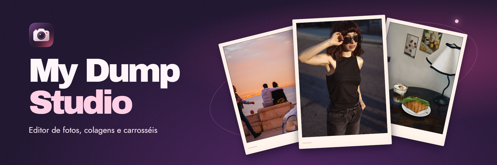

Pense no carrossel inteiro
Comece com uma grade, Polaroids ou um layout contínuo. Combine fotos, texto, formas e bordas em camadas. Troque do quadrado para Stories ou para o feed retrato preservando as proporções da composição.

Editor de fotos e carrosséis
Do rolo de câmera ao carrossel.
Importe suas fotos, monte um carrossel e ajuste o visual com filtros e texturas. Salve o tratamento como preset para outros projetos e exporte cada página em JPG ou PNG.
Um café no meio da tarde, o caminho de volta e o retrato que você quase apagou. No My Dump Studio, cada foto ganha um lugar na sequência. Escolha a composição, ajuste cada camada e veja o carrossel inteiro antes de exportar.
Comece com uma grade, Polaroids ou um layout contínuo. Combine fotos, texto, formas e bordas em camadas. Troque do quadrado para Stories ou para o feed retrato preservando as proporções da composição.
Experimente 44 filtros, simulações de câmera, curvas e texturas. Aplique grão, vinheta ou luz vazada à foto selecionada e ajuste a intensidade com o original preservado.
Salve filtros, ajustes e efeitos como um preset. Compare o antes e depois, organize os favoritos e leve seus looks para outra instalação com a exportação em JSON.
Baixe o instalador .exe da versão mais recente no GitHub. Execute o arquivo e abra o My Dump Studio pelo menu Iniciar.
Crie um projeto, escolha o formato e coloque suas fotos em um layout.
Edite cada camada e salve um preset se quiser repetir o look.
Gere JPG ou PNG nas dimensões do projeto.
Os projetos ficam no computador e têm salvamento automático. Você pode começar a editar sem criar uma conta.
A demo usa fotos de exemplo para testar looks, intensidade, layouts e prévias em PNG. As ferramentas de camadas e a biblioteca de presets ficam no aplicativo desktop.
O editor oferece formatos quadrado, retrato, horizontal e Stories. Cada página pode ser exportada em JPG ou PNG.